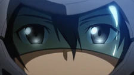
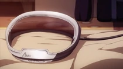
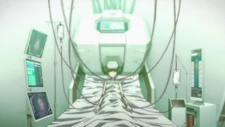

So how to use this?
In order to access a virtual world, a player must use a FullDive machine. Examples of FullDive machines include the NerveGear, the AmuSphere, the Medicuboid and the Soul Translator.
The history of Fulldrive
The Second generation
The NerveGear

It's a 2nd generation FullDive machine that was created by Argus. It only has a single interface that covers a player's whole head and face. It completely controls the player's consciousness by redirecting the signals the brain sends to the body and sending its own waves to stimulate the five senses. It has its own battery source, as well as a high frequency electromagnetic microwaves transmitter. Puzzles, education related games, or environmental type games were first produced for NerveGear. Therefore, Sword Art Online was a major excitement to all gamers. This design trapped 10,000 players during the official launch of Sword Art Online in November 2022. It is the first VR technology that has been mass-produced.
AmuSphere

The AmuSphere is a 2nd generation FullDive machine, which was co-developed by RECT Progress Inc.. The system has been modified to make it safer than its predecessor by changing the microwave transmitter to a low frequency one. The AmuSphere's design incorporates various sensors that continually monitor blood pressure and brain waves and provoke a safety logout feature in case that the person's status becomes abnormal. In addition, the AmuSphere does not completely block out signals from the body, like NerveGear did, so some players may pay extra for specialized rooms designed to make the experience in the virtual world more real by excluding the sounds and sensations from the outside.
The third generation
Medicuboid

The Medicuboid is a 3rd generation FullDive machine developed for use in the medical field, instead of the entertainment industry. The basic design of the machine was provided by Koujiro Rinko, based on the machine that Kayaba used to copy his memories and thoughts onto the Internet. Unlike the 2nd generation devices that only consist of a helmet that connects to the user's brain, the Medicuboid is integrated with a bed, from the head to the spinal cord, rather than just a helmet and it connects not only to the medulla, but to the spinal cord as well. It also possesses a greater processing power, allowing interaction with deeper parts of the brain. All these improvements provide the user with enhanced reflexes and reaction time. However, this machine is only meant to be used for medical purposes, and specifically for patients in Terminal Care. The users of the Medicuboid hardly use their own bodies to come back to the real world; instead, they connect to external devices, like cameras and microphones, via the Medicuboid to interact with the real world.
The forth generation
Soul Translator
 The Soul Translator is a 4th generation FullDive machine, invented by Higa Takeru at Rath. Unlike its predecessors, this machine does not connect to the users brain, but the user's Fluctlight (i.e. soul or consciousness) instead. The machine was created to be used in Project Alicization to create a highly adaptive Artificial Intelligence by copying a human's Fluctlight. The machine also has a function called Fluctlight Acceleration (FLA), which allows the machine to accelerate the user's «Thought Clock Control Signal», thus accelerating the user's sense of time by up to five million times that of the time flow in the real world. Additionally, the virtual world rendered by the Soul Translator is astoundingly lifelike, as the machine renders the world via memories, instead of polygons, meaning that every object in the virtual world is at the same level as the real thing in the user's consciousness.
Brain Implant Chip
Another 4th generation FullDive machine was said to be under research at Santa Clara University. Kazuto believed that this research is the real successor of FullDive Technology, instead of the STL, which he thought was too complicated to be downsized for commercial use.[4] The Brain Implant Chip has appeared in Accel World, a series written by the same author as the Sword Art Online light novels.
The Soul Translator is a 4th generation FullDive machine, invented by Higa Takeru at Rath. Unlike its predecessors, this machine does not connect to the users brain, but the user's Fluctlight (i.e. soul or consciousness) instead. The machine was created to be used in Project Alicization to create a highly adaptive Artificial Intelligence by copying a human's Fluctlight. The machine also has a function called Fluctlight Acceleration (FLA), which allows the machine to accelerate the user's «Thought Clock Control Signal», thus accelerating the user's sense of time by up to five million times that of the time flow in the real world. Additionally, the virtual world rendered by the Soul Translator is astoundingly lifelike, as the machine renders the world via memories, instead of polygons, meaning that every object in the virtual world is at the same level as the real thing in the user's consciousness.
Brain Implant Chip
Another 4th generation FullDive machine was said to be under research at Santa Clara University. Kazuto believed that this research is the real successor of FullDive Technology, instead of the STL, which he thought was too complicated to be downsized for commercial use.[4] The Brain Implant Chip has appeared in Accel World, a series written by the same author as the Sword Art Online light novels.